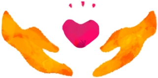
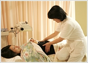
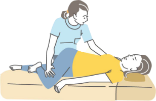

オーダーメイド治療

当院の治療は、まずお話を聞くことからはじまります。
東洋医学は「全体医療」です。
症状の出ているところだけが悪いのではなく、全身の状態の象徴的な表れが症状であると捉え、一番つらいところ以外の状態や日常生活、からだのリズムなどについてもお聞きします。
ゆっくりお話をうかがって、原因を追究し、なるべく少ない鍼で治療していきます。
からだの状態を診て、必要な時はお灸を使う場合もあります。
その方に合わせた“オーダーメイド治療”を行っています。
女性同士だからわかる話、聞ける話があると思います。
どんなちょっとしたことでも、からだと心の信号なのかもしれません。
病院に行くほどでもない、どこへ行っていいかわからない、調子が悪いのに検査結果に何も出ないという方もご相談ください。
家庭にいても、社会にいても、女性はかなりの無理をしていることが多いようです。
家庭で忙しい人も、仕事が忙しい人も、健康のためと自分へのご褒美を兼ねて定期的にからだと心のお手入れをすることをおすすめします。

女性同士だから話せること、
聞きたいことがあると思います。
どんなことでもお話しください。
健康を守るのは誰？

からだには自然治癒力があります。
けがをした時、消毒をします。
でも消毒薬が治してくれるのではありません。
自分のからだが本来持っている自然治癒力で治るのです。
けが以外の病気も同じです。
『大切なのは、自分で治そうとすること。』
からだの声に耳を傾けてみてください。
自分の健康はお医者さんが守ってくれるのではありません。
薬が治してくれるのでもありません。
からだは必ず信号を出しています。あなたの頭で考えるより、
からだは正直です。
わたしは聞き慣れないからだの声を聴くお手伝いをします。